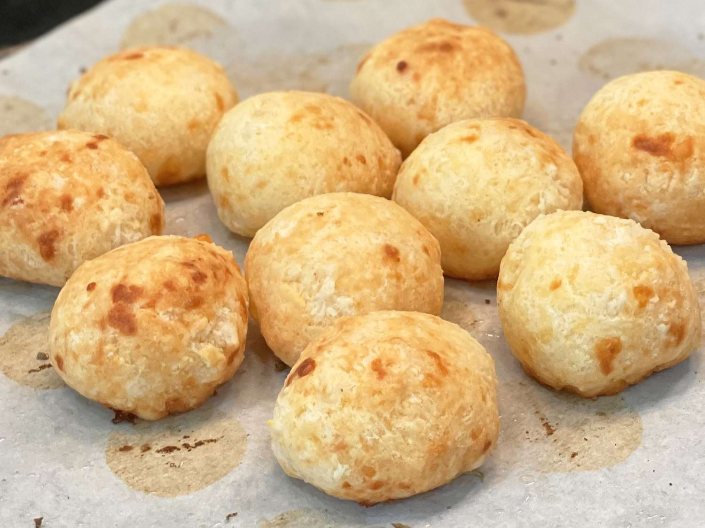

Pao de Queijo (Brazilian Cheese Bread)

Pao de Queijo or Brazilian Cheese Bread is a small, baked cheese bun, a popular snack and breakfast food in Brazil.
Ingredients
- half a cup of olive oil or butter
- 1/3 cup of water
- 1/3 cup of milk or soy milk
- 2 cups of tapioca flour
- 1 tsp salt
- 2 tsp minced garlic
- 2/3 cup oof freshly grated Parmesan cheese
- 2 beated eggs
Steps
- Preheat oven to 375 degrees F (190 degrees C)
- Combine olive oil, water, milk, and salt in a large sauce pan and place over high heat. Bring to a boil and immediatley remove from heat.
- Stir in tapioca flour annd garlic, stirring until smooth. Set aside too rest for 10 to 15 minuets.
- Stir cheese and eggs into tapioca mixture until combined; the dough will be chunky, like cottage cheese.
- Drop dough by 1/4 cup-size balls onnto an ungreased baking sheet.
- Bake in the preheat oven until the tops are lightly browned, 15-20 minuets